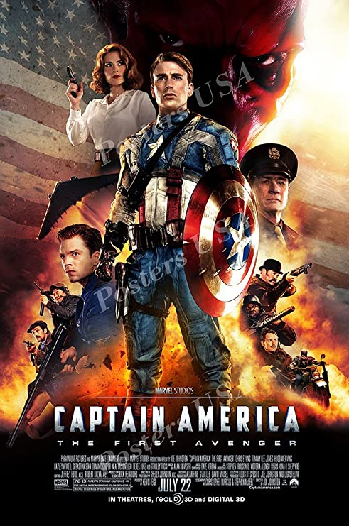
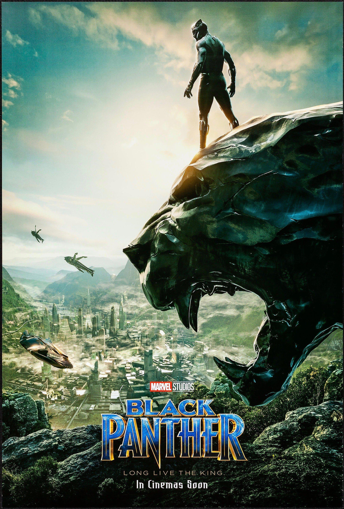
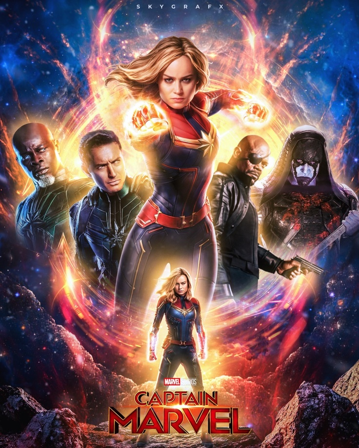
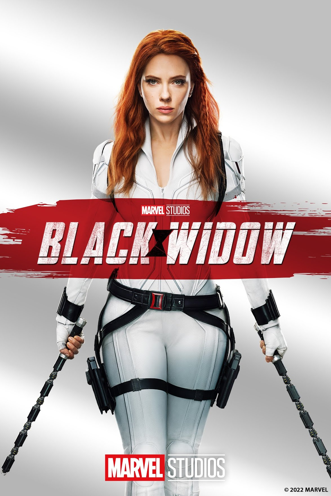

-
IRON MAN

- Iron Man is a 2008 American superhero film based on the Marvel Comics character of the same name. Produced by Marvel Studios and distributed by Paramount Pictures, it is the first film in the Marvel Cinematic Universe (MCU). Directed by Jon Favreau from a screenplay by the writing teams of Mark Fergus and Hawk Ostby, and Art Marcum and Matt Holloway, the film stars Robert Downey Jr. as Tony Stark / Iron Man alongside Terrence Howard, Jeff Bridges, Shaun Toub, and Gwyneth Paltrow. In the film, following his escape from captivity by a terrorist group, world famous industrialist and master engineer Tony Stark builds a mechanized suit of armor and becomes the superhero Iron Man.
-
CAPTAIN AMERICA: THE FIRST AVENGER
 - Captain America: The First Avenger is a 2011 American superhero film based on the Marvel Comics character Captain America. Produced by Marvel Studios and distributed by Paramount Pictures, it is the fifth film in the Marvel Cinematic Universe (MCU). The film was directed by Joe Johnston, written by Christopher Markus and Stephen McFeely, and stars Chris Evans as Steve Rogers / Captain America alongside Tommy Lee Jones, Hugo Weaving, Hayley Atwell, Sebastian Stan, Dominic Cooper, Neal McDonough, Derek Luke, and Stanley Tucci. During World War II, Steve Rogers, a frail man, is transformed into the super-soldier Captain America and must stop the Red Skull (Weaving) from using the Tesseract as an energy source for world domination.
BLACK PANTHER
- Black Panther is a 2018 American superhero film based on the Marvel Comics character of the same name. Produced by Marvel Studios and distributed by Walt Disney Studios Motion Pictures, it is the 18th film in the Marvel Cinematic Universe (MCU). The film was directed by Ryan Coogler, who co-wrote the screenplay with Joe Robert Cole, and it stars Chadwick Boseman as T'Challa / Black Panther alongside Michael B. Jordan, Lupita Nyong'o, Danai Gurira, Martin Freeman, Daniel Kaluuya, Letitia Wright, Winston Duke, Angela Bassett, Forest Whitaker, and Andy Serkis. In Black Panther, T'Challa is crowned king of Wakanda following his father's death, but he is challenged by Killmonger (Jordan), who plans to abandon the country's isolationist policies and begin a global revolution.
CAPTAIN MARVEL
- Captain Marvel is a 2019 American superhero film based on Marvel Comics featuring the character Carol Danvers / Captain Marvel. Produced by Marvel Studios and distributed by Walt Disney Studios Motion Pictures, it is the 21st film in the Marvel Cinematic Universe (MCU). The film was written and directed by Anna Boden and Ryan Fleck, with Geneva Robertson-Dworet also contributing to the screenplay. Brie Larson stars as Carol Danvers, alongside Samuel L. Jackson, Ben Mendelsohn, Djimon Hounsou, Lee Pace, Lashana Lynch, Gemma Chan, Annette Bening, Clark Gregg, and Jude Law. Set in 1995, the story follows Danvers as she becomes Captain Marvel after Earth is caught in the center of a galactic conflict between two alien civilizations.
BLACK WIDOW
- Black Widow is a 2021 American superhero film based on Marvel Comics featuring the character of the same name. Produced by Marvel Studios and distributed by Walt Disney Studios Motion Pictures, it is the 24th film in the Marvel Cinematic Universe (MCU). The film was directed by Cate Shortland from a screenplay by Eric Pearson, and stars Scarlett Johansson as Natasha Romanoff / Black Widow alongside Florence Pugh, David Harbour, O-T Fagbenle, Olga Kurylenko, William Hurt, Ray Winstone, and Rachel Weisz. Set after the events of Captain America: Civil War (2016), the film sees Romanoff on the run and forced to confront her past.
(click on the posters to go their respective imdb page)